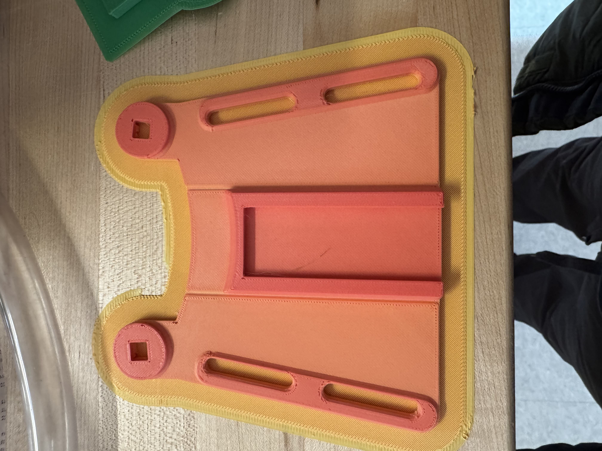
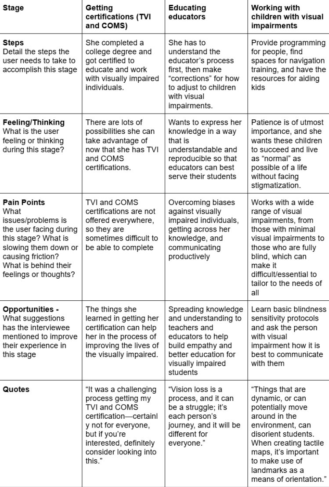

The goal of this project was to introduce the fundamentals of Computer-Aided Design (CAD) and
Computer-Aided Manufacturing (CAM) through hands-on experience with a Prusa MINI+ 3D
Printer
and PrusaSlicer software. The project was divided into three parts:
Creating and printing a customized nametag using PrusaSlicer
Printing a second, more challenging test print (a torture test) to explore the
limits of
3D printing.
Documenting the process on a personal website to reflect on the learning
experience.
By completing this project, I gained the ability to slice and print 3D models, understand the
technical constraints of additive manufacturing, and improve troubleshooting
techniques for common 3D printing issues.
Part 1: Nametag Design and Printing
First NametagSecond Nametag
Process
Downloading and Editing the Nametag File
I accessed the provided nametag .3mf file from the course repository.
Using PrusaSlicer, I modified the text and layout to personalize my
nametag.
Configuring PrusaSlicer Settings
Printer: Prusa MINI+ with a 0.4mm nozzle
Layer height: 0.2mm
Infill: 15% grid pattern
Supports: None(since the design did not require overhang support)
Starting the Print
I loaded PLA filament and heated the nozzle and print bed accordingly.
After slicing the model, I exported the G-code to a USB and started the
print.
During this process, I encountered an issue where filament got stuck in the
extruder
tube. With the help of Ben and Ian, I was able to clear the blockage and
restart
the print successfully.
Observations and Adjustments
First nametag: The print was clean and legible
Second nametag: The text was less distinct, likely due to the font size
being too
small and a lack of contrast between the layers (since I did not
change the
filament color for the top layer).
Future imporvments: I should increase the font size and consider pausing
the
print to change filament colors for better readability.
The file was available in both .3mf and .stl formats, allowing comparison
of
metadata retention.
Slicing and Printing
I imported the .3mf file into PrusaSlicer and reviewed the
structure.
Initially, I considered adding supports, but I was advised against it, as the
test is
designed to push the printer’s overhang and bridging capabilities.
After slicing, I exported the G-code to a USB and started the print.
Observations and Analysis
The torture test features overhangs, bridges, and acute angles to
evaluate the
printer’s performance.
The print successfully completed, with only minor stringing in the bridging
sections.
Future improvements: Adjusting the retraction settings and increasing the
cooling fan speed could reduce stringing.
I customized the website structure, adding an ENGR 11A tab for project
documentation.
Website Hosting Challenges
Initially, I attempted to register cameron-sherman.com through
GoDaddy,
but encountered domain management and SSL certificate issues.
I later transferred my domain to NameCheap, which provided a smoother
setup
process.
Final Touches
I uploaded images of my nametag and torture test prints.
My reflection included insights into successes, challenges, and
improvements for
future prints.
Reflection & Future Improvements
Observations
Importance of Proper Slicing Settings
The nametag text size affected readability, and the lack of contrast
reduced
visibility.
The torture test revealed minor stringing, indicating the need for
improved
retraction settings.
Understanding Printer Limitations
The Prusa MINI+ handled overhangs well but had slight issues with
bridges.
The lack of color contrast in my nametag print highlighted the importance
of
filament changes.
Website Development and Hosting
I successfully documented my work on GitHub Pages, reinforcing my website
deployment skills.
Overcoming domain hosting issues improved my understanding of SSL
certificates
and DNS management.
Conclusion
Summary
Hands-On Learning
This project provided hands-on experience with CAD, CAM, 3D printing, and
website
development.
I gained valuable insight into printing parameters, troubleshooting, and
technical limitations.
Future Applications
I will apply these lessons to create more refined and functional 3D
prints.
Exploring advanced PrusaSlicer settings will help optimize print quality.
Design Project #2: Remixing 3D Designs
The goal of Project #2 was to remix existing 3D models by combining elements from different
designs,
modifying them using 3D modeling software, and printing the final models. This project was
divided
into two parts: using TinkerCad for remixing and using Fusion360 for more advanced
modifications.
The objective was to explore 3D modeling, enhance design skills, and gain hands-on
experience with
3D printing processes.
Part 1: TinkerCad Remixing
Concept & Design Process
For the first part of this project, I decided to recreate a visual representation of my favorite
joke “A horse walks into a bar. The bartender says, ‘Why the long face?'” To bring
this
concept to life, I planned to combine a horse model with a bar model using TinkerCad. I
initially
sketched out my design, but I found that my proportions were off because I started with
the horse rather than defining the 3D environment first. To streamline the process, I opted
to
download an .stl file of Moe’s Tavern from The Simpsons as my bar model, which
allowed me to
focus on placing the horse correctly within the scene.
TinkerCad Modeling Process
Importing .stl Files: I sourced a 3D horse model and a Moe’s Tavern model from
Thingiverse and imported them into TinkerCad.
Alignment & Scaling: Initially, I had difficulty positioning the horse inside the
tavern
because my snap grid was set to 1mm. After turning the snap grid off, I gained finer
control
over object placement.
Modifications: To ensure a proper fit, I adjusted the scale of the horse and
tweaked the
dimensions of the tavern’s doorway. I also removed unnecessary walls and adjusted the
model’s
orientation for printing efficiency.
Grouping & Exporting: Once I finalized the positioning, I grouped the elements in
TinkerCad and exported the final .stl file.
3D Printing Process
Importing to PrusaSlicer: I imported the .stl file into PrusaSlicer and adjusted
the
scale slightly to fit within the printer’s build volume.
Support Structures: Since the design had overhanging parts, I added support
structures to
ensure the print’s structural integrity.
Printing: I initiated the print and monitored the process for any errors or
warping.
Post-Processing: After printing, I removed the supports carefully. However, I
noticed
some rough edges where the supports had been attached. More precise removal tools or
finer
support settings in PrusaSlicer could have improved the post-processing quality.
Resluts and Observations
The final print successfully represented the joke, with the horse positioned within the bar.
The
overall print quality was satisfactory, though I could have optimized the support removal
process to
reduce imperfections. Additionally, adjusting the model’s orientation before slicing could
have
improved print efficiency and reduced filament waste.
Part 2: Remixing with Fusion360
PokeBall Top in Fusion360PokeBall Top after Print Finished PokeBall (Closed) Finished PokeBall (Open)
Concept & Design Process
For the second part of the project, I decided to create a functional, auto-opening PokéBall.
I found
inspiration from a
Reddit post that had a similar design and chose to personalize it by adding my
nickname,
"Cam," to the top half of the PokéBall.
Fusion360 Modeling Process
Importing .stl Files: I downloaded the PokéBall model components from the
aformentioned
tutorial.
Design Adjustments: Initially, I attempted to assemble multiple components in
Fusion360
but faced difficulties in merging them effectively. Based on advice from Ben and Ian, I
shifted
my approach to modifying a single component rather than assembling multiple parts.
Mesh Conversion: To engrave my name into the top of the PokéBall, I first had to
convert
the imported mesh into a solid body.
Adding the Name: Using Fusion360’s text tool and following an online tutorial, I
debossed
my nickname "Cam" into the surface of the top half of the PokéBall. While I originally
considered an embossed design, I found the debossed look more aesthetically pleasing and
easier
to print.
Exporting: After finalizing the modifications, I exported the modified .stl file
for
printing.
3D Printing Process
Importing to PrusaSlicer: I imported the modeified .stl file into PrusaSlicer and
added
supports for the overhanging sections.
Printing the Top Half: The print quality was good overall, but the very top of
the
PokéBall's hemisphere did not print completely. Thankfully, this issue was minimal and
did not
impact the functionality of the PokéBall.
Printing the Other Components: I proceeded to print the remaining components and
followed
the assembly steps outlined in the tutorial.
Resluts and Observations
The final product was a fully functional PokéBall that opens and closes with a button press.
The
debossed name on the top half turned out well, adding a unique, personal touch to the
design. The
minor issue with the top hemisphere could have been avoided by slightly increasing the
infill
percentage or adjusting the print orientation.
Design Project #3: Form and Fit for Electronics
The Lightning McQueen Chassis Enclosure Series
To begin the design process for the chassis enclosure, my
partner,
Vivian, and I brainstormed potential concepts. Vivian proposed a race car theme,
which I
refined to model the enclosure after Lightning McQueen from Pixar’s Cars
franchise.
Given the complexity of modeling in Fusion360, I initiated the modeling process
on
February 13 to allow lots of time for refinement. Initially, I followed a tutorial to guide the
modeling process. The first step, which involved adding reference canvases in
Fusion360,
was beneficial. However, the remainder of the tutorial proved ineffective, as
the
resulting model failed to print correctly when converted to .3mf or .stl format.
When
sliced in PrusaSlicer, only support structures were generated, indicating an
issue with
model thickness. Attempts to add thickness resulted in the error message: “The
operation
could not create a valid result. Try adjusting the values or changing the input
geometry.” The model’s geometry was too complex to modify effectively,
necessitating a
complete restart. After further research, I located another tutorial that
utilized the
Chevrolet Corvette C6 orthographic diagrams as reference canvases; the same car
model
that inspired Lightning McQueen’s design. Following this tutorial, I
successfully
progressed through the initial steps until approximately the
twelve-and-a-half-minute
mark. At this stage, I encountered difficulties in creating accurate wheel holes
due to
differences in geometry between the tutorial model and my own. To address this
challenge, I employed extruded cylinders to form the wheel holes, which proved
to be an
effective solution. After successfully incorporating this adjustment, I was able
to
extend the thickness of the car model without errors. The final model was
successfully
generated and appears as shown in the following image. I saved the .stl file and
exported it to TinkerCad, where I could make more simple extrusions for the
window
shield, and McQueen’s signature number ‘95’ on each side of the car. Then, I
exported
the .stl file to PrusaSlicer to scale it based on the measurements done in class
and was
about to slice it to make supports...
Upon further evaluation, Vivian and I identified several
design
issues with the chassis enclosure. The enclosure obstructed access to the
battery
compartment and power button, and the car’s spoiler contained unnecessary
geometry.
However, we determined that these issues could be effectively addressed through
additional modifications. To implement these adjustments, we utilized TinkerCad
to
create targeted extrusions. First, we modified the front window by converting it
into a
complete extrusion, allowing users to access and remove the batteries. Next, we
added a
rotated cube extrusion at the rear of the car to provide access to the power
button.
Finally, we introduced a cylindrical extrusion to eliminate the unnecessary
geometry in
the spoiler. These modifications successfully resolved the identified issues
while
maintaining the integrity of the overall design.
After measuring the chassis’ dimensions, we scaled our new
enclosure
to match it, with an additional 2mm as leeway, and then we began our print.
The red model represents the initial print outcome. While it
provided
a solid starting point, it was not the correct size. The model was too short and
lacked
sufficient width, and the wheel holes did not extend over the body of the car as
intended. To address these issues, Vivian and I adjusted the model’s dimensions
based on
the tailored box (yellow) we had created. We increased the model’s length and
width by a
few millimeters, ensuring that it was wider and slightly shorter than the yellow
box.
However, modifying the height presented a challenge, as any adjustments risked
distorting the proportions of the wheel-hole overhangs.
After several iterations and careful adjustments, Vivian and
I
decided to scale the height of the model and incorporate cylindrical extrusions
using
TinkerCad. Initially, the design appeared unrefined due to an overhanging
section of
excess material. To address this issue, we added a 2mm-wide semicircle to each
overhanging section, effectively minimizing its visibility. Satisfied with the
revised
design, we proceeded with the standard preparation process. We inverted the
model,
generated the necessary support structures, and initiated the second iteration
of the
Lightning McQueen print.
While the width and height of the second print were accurate,
the
length fell slightly short of the intended dimensions. Upon further analysis, we
determined that the printed model’s actual length was shorter than the
dimensions
specified in the computer model. This discrepancy was likely due to the
endpoints being
positioned at the spoiler. To correct this issue, we established a new target
length
based on precise measurements. Using a digital caliper, we measured the actual
length of
the tailored box (109.71 mm), the intended input length for the second print
(108.54
mm), and the actual length of the second print (106.48 mm). We then calculated
the
adjusted input length using the following equation: New Input Length=109.71
mm+108.54
mm−106.48 mm=111.77 mm This revised length was used as the new input dimension
for the
next iteration of the print.
The third print somewhat successfully addressed the length
discrepancy, aligning with the intended dimensions for width and height, and
while not
perfect regarding length, it could still fit well enough for the chassis to
function.
The model’s width and height remained consistent with the tailored box, and the
wheel
holes extended over the body of the car as intended. The revised design
partially
resolved the initial issues, resulting in a mostly functional and aesthetically
pleasing
chassis enclosure. This outcome demonstrates the importance of precise
measurements and
iterative adjustments in the design process.
The Laser Cut House Chassis Enclosure Series
Just like Vivian and I did with the 3D printed chassis
enclosure, we
began making our laser-cut chassis enclosure by brainstorming ideas for what we
would
make. After some thought, we settled on designing a mobile house. We
sketched out
how we would design it, agreeing on by making a wooden box reminiscent of the
one in the
tutorial, then adding two triangles to serve as a way to hang the roof panels,
and, of
course, two roof panels.
Our first laser cut (not pictured) was supposed to look like
this,
but when we tried to scale in Fusion360 to match the chassis’ perimiter, it
messed up
the scale of the connecting joints and holes, so we could not connect it. To fix
this,
we decided to remake the chassis box in Fusion360, except this time, instead of
directly
following the tutorial's measurements, we would use our measurements of the
chassis.
This method proved to be effective, as our new box could now be properly
assembled.
We only had one minor problem remaining, that problem being
the fact
that our roof panels were too long. We concluded that the best way to fix this
would be
to make a line in LightBurn to cut the unneded 'tiles'. After the cut, we were
able to
successfully assemble the full house and put it onto the chassis (pictured).
For Project 4: Open Source Assistive Technology, I took a dive into the world of open-source
technologies, more specifically, e-NABLE Community Foundation’s second iteration of the
Phoenix
Hand. By navigating through the e-NABLE community hub, I was able to create and assemble a
3D-printed prosthetic hand, all with the help of my project partner, Erica Hwang. With an approach that
could be
described as a
balance of divide-and-conquer and hands-on teamwork, we were able to use our strengths and
weaknesses to work together to create a Phoenix v2 hand, all the while learning a lot about
rapid
prototyping for assistive devices.
4.1: Reviewing Documentation
To begin Project 4, I started by navigating through both the e-NABLE hub’s Phoenix v2 Hand page as well as
e-NABLE’s
page
on NIH 3D Print Exchange.
Navigating
through both pages
was not too difficult, as each page only took a few user inputs to get to the correct
destination.
Ultimately, though, I chose to use the e-NABLE hub’s direct page, as their page makes it
easier to
access all of the necessary information needed to assemble the hand (.stl files, video
tutorials,
.pdf tutorials, etc.). This is mainly because it takes more user inputs (searches, clicks,
keyboard
inputs) to access all the proper materials on the NIH page than the e-NABLE hub. A little
difference
like this can go a long way.
After choosing the e-NABLE hub to be my base of information for assembling the hand, I had
to choose
which instructions to follow: a video tutorial or a .pdf instruction manual. I ended up
using both
the .pdf instructions and multiple video tutorials, as both had their strengths and
weaknesses. For
example, I found that the .pdf instruction manual was better for more general instructions
such as
what parts we needed to use and how to make simple assembly maneuvers. The videos, on the
other
hand,
were better for more precise instructions, as the creators of each video went pretty slow in
assembling their Phoenix v2 Hands, which proved especially useful for stringing the joints,
which
required detailed instructions and precise assembly maneuvers. A suggestion for both could
be more
labels in each video, and more precise instructions for the stringing in the .pdf manual.
4.2: 3D Printing and Assembling the Model
To begin the assembly process, I downloaded the parts in the form of .stl files from the
e-NABLE
community page for the Phoenix v2 hand. My next objective was to scale the parts at a 150%
size,
since at 100% scale, the Phoenix v2 hand would be too small to fit an able-bodied adult’s
hand.
While this proved to be more of an inconvenience rather than a challenge, the real challenge
came
from fitting all the scaled parts within a limited number of Prusa MINI+ 3D Printer build
plates. At
first, I tried to fit all of the scaled parts within three plates in PrusaSlicer, but I
(along with
everyone else assembling their own Phoenix v2 hand at 150% scale) realized that it would be
impossible to additionally generate supports for each part, as there would be overlap.
Therefore, I
settled for an efficient four-plate print. After some additional time spent moving parts
around in
PrusaSlicer, I was able to come up with the layout as seen above.
First print of partsSecond print of partsThird print (one part)

Fourth print (one part)
The assembly process was relatively smooth. Initially, we used the .pdf instruction manual,
as most
of the steps in the first few stages were straightforward and did not require a video. When
we got
to stringing the fingers, however, we switched to looking at multiple videos, as the .pdf
instructions did not provide a comprehensive enough guide for how to do the stringing. Even
though
we had a video, this step proved to be challenging, as sometimes we would tie one too many
knots on
a finger, use the wrong screw, or choose to insert a string with the wrong length.
Regardless of these setbacks, we were able to persevere through the design process and
complete our
assembly of a functional 3D-printed Phoenix v2 prosthetic hand at 150% scale! See the video
in the
introduction to view its functionality.
4.3: Extending, Critiquing, and Reflecting
Web Launcher in Fusion360 (Made in TinkerCad)Initial Sketch of the Web Launcher
Although the hand was complete, my job was not finished. My next task was to sketch and
create an
extension for the Phoenix v2 prosthetic hand. I quickly decided I wanted to make a
Spider-Man web
shooter to attach on top of the gripper box, but how would I do that? First, I created a
sketch of
my design and decided I would make a holder for a can of Spider-Man
Web Fluid (silly string). It would then be attached to a trigger, which is attached
to a
string tied to the middle and ring fingers. When the wrist is bent and the middle and ring
fingers
go down, the string is pulled, pushing the trigger, which releases the web fluid.
To be completely honest, because I did not have access to a computer with Fusion 360 when I
had the
time to make my design, I had to model my web-slinger in TinkerCAD, as it is a web
application. The
modeling went alright, though there was one problem I faced: how could I have the lever be
pushed
back when the string is attached to the lever? I thought about it for a while, and even
considered a
backwards web-launcher, when I realized that the most optimal course of action would be to
scrap the
string tied to the trigger, and instead have it go over the trigger, so that when the string
tightens due to flexing of the wrist, the trigger would be pressed and web-fluid would
shoot.
This project highlighted the power of open-source assistive technology and the role of
inclusive
design in fostering accessibility, adaptability, and community-driven innovation. Through
assembling
the Phoenix v2 prosthetic hand and designing an extension, I gained a deeper appreciation
for rapid
prototyping as a tool for empowering individuals with limb differences. e-NABLE’s
collaborative
model aligns with Microsoft’s Inclusive Design principles by recognizing diversity as a
strength,
embracing iterative design, and actively seeking feedback from end users to refine
solutions.
Sara Hendren discusses in What Can a Body Do?, assistive technology should not only restore
function
but also embrace the creativity and agency of those who use it. My experience creating a
Spider-Man
web shooter extension reinforced the idea that prosthetic devices can be more than just
functional,
they can also be expressive and personalized. Ultimately, this project underscored the
ethical
responsibility designers have in ensuring that technology is not only accessible but also
meaningful
and engaging for those who rely on it.
ENGR11a Final Project: Tactile Maps for an Accessible Brandeis
AccesibiliTeam Members: Kayla DiBenedetto, Najla Khan, Vivian
Rothberg, Cameron Sherman
Interviews
Elizabeth Nako Interview Journey Map
Elana Interview Journey Map
Nancy Sharon Interview Journey Map

Marcy Interview Journey Map
The four of us had a great time conducting each interview, despite the fact that only two or
three of us were at each interview due to the inevitable scheduling conflict. However, the
limited number of interviewers proved to be beneficial, as a maximum of three interviewers
per interview meant everyone was doing something, as one person would always be taking
notes, while the remainder of people would be asking questions. As for the content of the
interviews, they all went smoothly, as each interviewee seemed excited about the potential
of our projects and willing to help. We were able to get a much better understanding of what
its like having a visual impairment or working with people with visual impairments from
multiple perspectives.
Empathy Maps
Elizabeth Nako Empathy Map
Elana Empathy Map
Nancy Empathy Map
Marcy Empathy Map
Defining the Problem through Brainstorming and Themes
Although our interviews took slightly longer to conduct, we had already completed extensive
research and brainstorming beforehand. This preparation enabled us to efficiently arrange
the insights and identify key themes: Tactile Features & Sensory Elements, Navigation &
Movement, and Fixed Reference Points. Using these three themes, we were able to create
insight statements, which are statements that translate raw data into meaningful findings in
the pursuit of innovation. They are of upmost importance because mportant because they help
organizations understand consumer motivations, uncover unmet needs, and identify
opportunities for improvement.
Insight Statements & Further Analysis: "How Might
We..."
Tactile Features & Sensory Elements
How might we point out the most salient features of the Brandeis campus in a way that
makes use of clear labeling, high contrast, and texture variation in our design?
Use different fabrics and 3D-printed surfaces in our tactile map to create a variety of
textures
Add elevated blocks to indicate stairs
Focus on academic buildings and support centers rather than other infrastructure (such
as out-of-the-way housing and athletics facilities)
Incorporate multiple labeling systems for different protocols
Navigation & Movement
How might we improve the ability for people to navigate the Brandeis campus,
especially those with visual impairments, so that everyone is on an equitable plane when
moving around?
Create our maps with distinct textures and place them around campus
Map smaller sections of the Brandeis campus that can be carried by the student with them
(compared to the stationary map)
Fixed Reference Points
How might we incorporate landmarks and indicate entrances of buildings into our
overall design?
Use a different texture on the buildings to include the most accessible entrance or
indicating it in braille/with a symbol
Add a "you are here" symbol with a distinct texture
Storyboard
After brainstorming and creating our insight statements, we concluded that creating a master
map to be put on campus would be the best way to go about executing our vision. Based on our
feedback, we would focus on:
Academic buldings, accesibke dorm rooms, and dining halls
Making use of high visual and texture contrast
Emphasizing where the enterances to buildings are
We plan to bring our vision to life by using a mixture of 3D printing and laser cutting, as
well as added materials for texture. We also made a storyboard to show how a potential user
would interact with our product, as seen below:
Storyboard Feedback
After presenting our storyboard to our classmates, we recieved some helpful feedback from
them to inform our design process. The summarized feedback is shown below:
Stage 1 of the Tactile Brandeis Map: Laser Cut of Massel Quad area
For our first prototype, we created two products: a laser-cut map of Massell Quad and a
Braille calibration test. Using TouchMapper, we generated a digital map and converted it
into an SVG compatible with Lightburn. We manually added buildings to scale and chose to
laser-etch the paths for tactile clarity.
the Braille callibration test was printed in three sizes: 1.7 mm, 1.6 mm, and 1.5 mm. Later,
we met with Elana to test both items. She liked the etched paths but recommended making the
roads thicker. For the Braille, she preferred the 1.7 mm size, with the 1.6 mm still
readable, while the 1.5 mm was too small. We’ll be using the 1.7 mm size going forward and
are excited to keep working with Elana on refining our final design!
Design Review: an Analysis of Classmate and Interviewee Feedback
Final Presentation PowerPoint
Below is the Powerpoint the AccesibiliTeam (Kayla, Najla, Vivian, Cameron) made for our final
presentation in ENGR 11a: Introduction to Design Methodology. We hope you enjoy!
Final Presentation Dozuki Guide
Below is the .pdf Dozuki Guide for our project. Note: Although it says "Written by: Cameron
Sherman", I am not the sole author of this project. Kayla, Najla, and Vivian all equally
contributed alongside myself.
This source is helpful for looking at how GIS and GPS mapping systems can help the
creation of
tactile maps. The article details work in Europe that utilizes symbology keys and
explains
issues of customization and being able to zoom in on specific areas. This article is a
good
starting point to examine aspects of creating tactile maps and what we might want to
include/learn from them.
Pahaoja, Samuli. “Tactile Maps Easily | Touch Mapper.” Touch Mapper -
Tactile
Maps for the Visually Impaired. Accessed March 25, 2025.
https://touch-mapper.org/.
This source creates .stl tactile maps by entering an address and selecting a print size
and scale
of the map. Although we could simply create a tactile map from this webpage, that takes
all the
fun away from designing a tactile map, and since it makes maps in squares, we would
either have
to make way too many mini maps or one map that included areas outside of campus, such as
the
Cedarwood neighborhood. Nonetheless, this source could be a great reference for making
our final
.stl map.
This source provides a solid framework for defining what a tactile map is and why tactile
maps
are necessary societal tools. It goes into the history of tactile maps, detailing when
they were
first created in the 1800s and how they evolved as time went on. It debunks the
suggestion that
tactile maps are of no use to those who are visually impaired. It also asserts that
everyone,
even those with no visual impairment, should use tactile maps to enhance their
understanding of
the world around them.
This article explores the design and purpose behind raised maps, detailing both the
artistic and scientific considerations involved in their creation. It offers insight
into how raised
topographic features can be both educational and practical, and it gives context to the
historical and technical progression of tactile cartography.